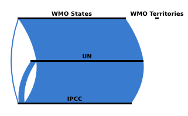

How does a country become a member of the Intergovernmental Panel on Climate Change (IPCC)?
Any state member of the United Nations (UN) or the World Meteorological Organization (WMO) becomes ipso facto a member of the Intergovernmental Panel on Climate Change (IPCC).
While all UN members are states, WMO members can be states or territories; only states are IPCC members, not territories.
You can download the underlying data in CSV format or browse the whole project on GitHub.